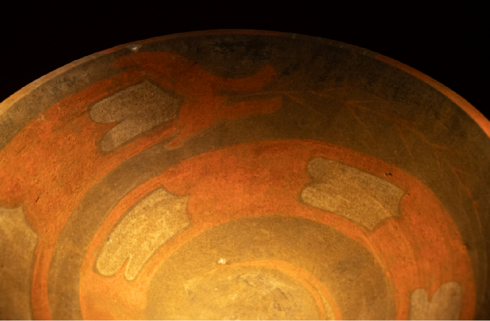
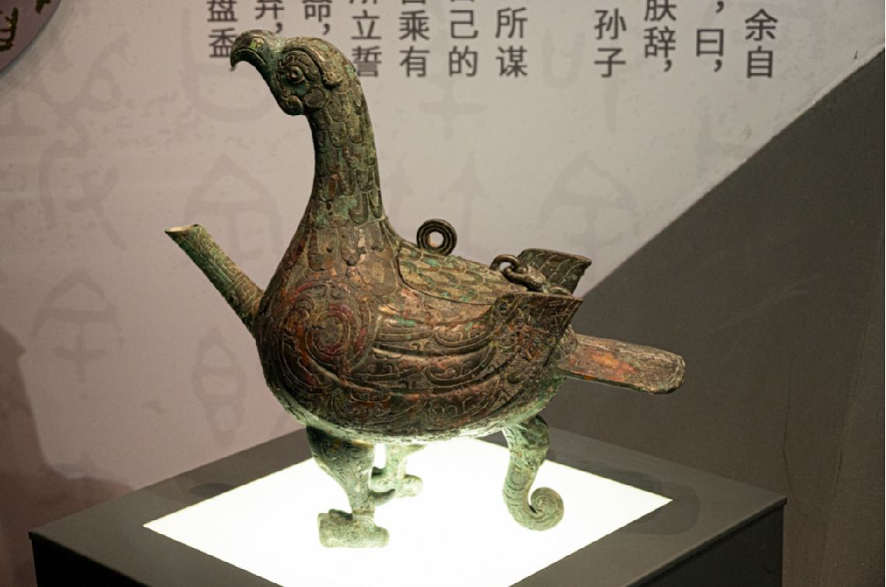
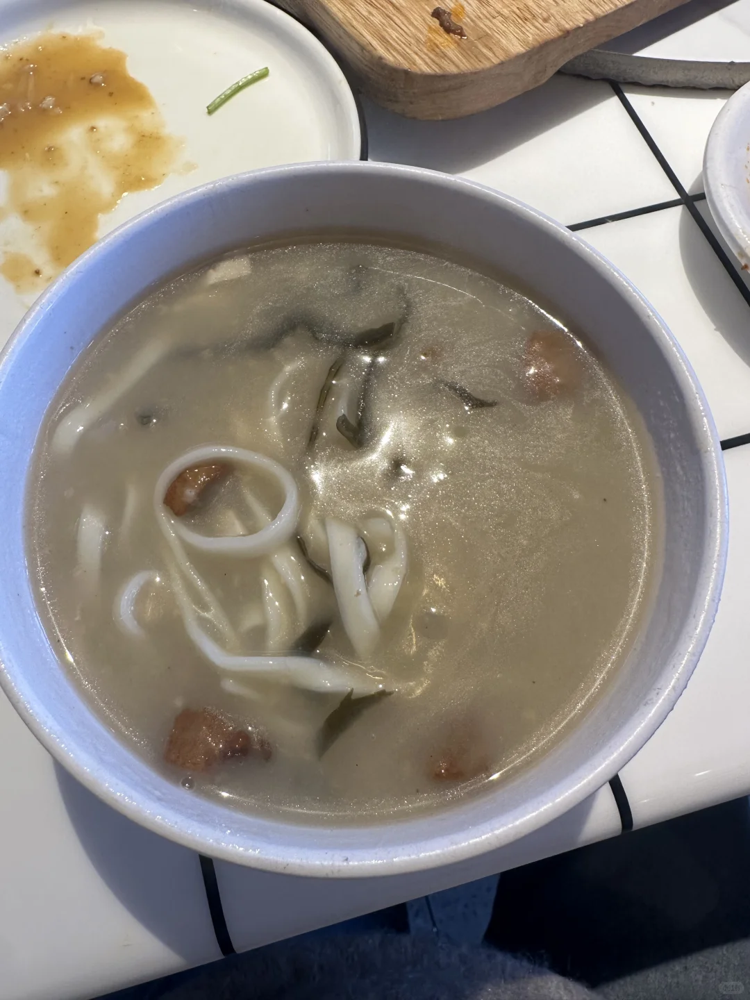
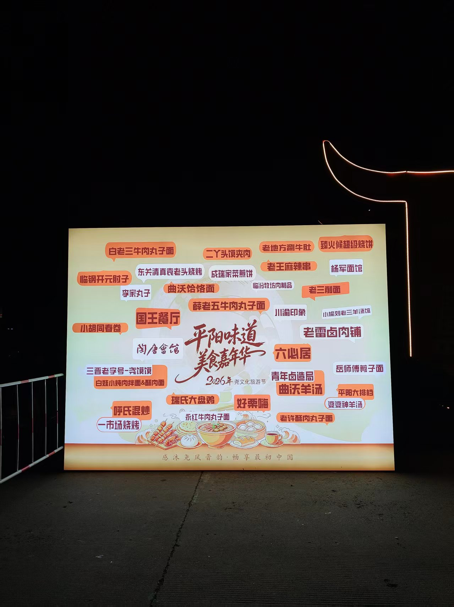
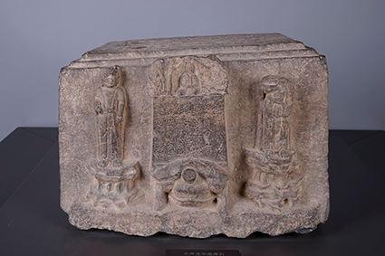

01 / 03 · 优先尝混炒
张军 → 鼓楼散步
约19:00
张军米线 · 时光颂B1
先问混炒小份/辣度，不必另点一碗面
饭后
坐车去鼓楼，再决定是否延伸财神楼
以鼓楼→店测算：车程2.6km / 9–10分；步行35分，不是贴着景点的店。
为何选 / 核验边界 ▾
两篇食客笔记提到张军混炒，第三篇评论有对比推荐。分店按地图核对选时光颂，不能保证是作者同一家。高德9/30显示10:00–22:00、人均¥16，非菜单承诺；明显排队就换方案。


旧方案仅备查，不代表当前安排；旧余票、价格和集合点不再作为执行依据。
下面是出发前的计划快照。当前以“已到临汾、酒店14:30接车”为准，勿再照旧站点集合。
© OpenStreetMap 贡献者；FOSSGIS / OSRM 的步行、骑行、驾车模型分别计算。GCJ-02已转WGS84；馆址匹配道路偏移约177米，非精确入口。路线数据与误差


文博时空 · 小石头《不可错过的小众博物馆，也有一件“鸟尊”》，2026-03-10。图片为该文配图；当日是否展出、原件或复制品未核实，以展签为准。
从馆址步行模型≈21分钟。午市11:00–14:30（9/30地图记录）。砂锅/油粉饭二选一，先问小份；想换掉面条，可考虑油粉饭的酸香口。

从馆址步行模型≈24分钟。滨河南路3号新能源大厦F3；午市11:30–14:00（9/30记录）。适合想吃热砂锅时选，口碑线索未锁定此分店；有排队反馈，不专程等位。
本地人用真心写的临汾美食指南❶ · 本分店菜图未核实，不借用老陈图片。
梧桐里5号，酒店在6号。先回酒店再吃；馆→酒店驾车≈4.9 km / 模型6分钟，建议连叫车预留20分钟。问吉县小炒能否少粉条、加肉及小份；原笔记分店不明，当店是否供应未核实。
央视《探索·发现》2023-11-27，第1集。已核阅官方简介，未声称完整看过视频；关注考古发现过程，不把“尧舜之城”线索当定论。
饽糕是你今晚想尝的食物，海报选读中未锁定对应摊位；先向现场摊主问，不把另一种糕冒充饽糕。
婆婆神羊汤：你提供的海报上可见店名；仅作换牌候选，口味、肉质、今天开摊情况未核实。先问肉软不软、能否小份，不能把“肉多／厚切”当优点。
老雷卤肉铺：同属海报名单备选；菜种、切配和小份需现场问，不是已核实推荐。
本段优先避开水感重的混炒、厚皮食物和面条；这些是你的选餐条件，不是商家质量排名。

华门 · 嘉年华发布会场地公告
活动公告：9/20–10/7，尧庙广场／华门核心区域；你已确认是今晚目的地。17:00是建议到场时间，不是官方开摊时刻。
看鼓楼外观与街区、再听演出；不承诺登楼或未核实的灯光开放。财神楼位置：交叉口东北角
目标是财神楼街财神庙的二层阳台，不是泛搜“财神楼”后任意一家店。临汾市政府台港澳办 · 演出地点报道
9月公告：9/23–10/7每晚19:30，9/30休场；10/1在公布场期内。结束时间和10/1临时天气调整未核实。
精确舞台坐标尚未核定，故不给伪精确导航：先用上段鼓楼固定点，再按路口地址找阳台。
旧方案仅备查，不代表当前安排；旧余票、价格和集合点不再作为执行依据。
广胜寺已于9/30完成，不再安排10/1重游。若夜间活动因天气取消，直接回酒店休息；不替你新增第三个去处。


这段按你实际住的西站店计算，不再套用“市区离站 7.8 km”。沿途看点未核实，不专门绕路。
路程为 10/1 查询的 OSM / OSRM 道路模型；高德 GCJ-02 点位先转 WGS84。不是直线距离，也不是高德实时导航。
模型分钟数不含叫车、红绿灯拥堵、安检和入口步行；时间线采用更宽的出门预算。当天点地点链接唤起高德复核。
票面记录 ¥82；到站时刻本轮核阅 G622 公开时刻表。公开时刻表不是你的实时订单，出发以 12306 当日票面为准。
停止检票时间、到发站台未核实。若前车晚点，车上就向乘务员说明两张票；不自行出站再安检。
主线散步合计约 3.8 km／50 分钟纯步行，不含停留。可直接去鸿记，或回酒店休息；餐馆是否营业需当天确认。
资料整理：10/1。钟点未注明“车次／官方”的均为行程建议；道路耗时为模型估算。原订单未改动。
地址：威远门中路 19 号，如家精选酒店（长治八一广场威远门中路店）。今晚仍住这里，大行李留酒店。
餐食、接送细节资料没有确认记录；需要核对的是商家通知，不是另买票。
路程为 10/1 查询的 OSM / OSRM 道路模型；高德 GCJ-02 点位先转 WGS84。不是直线距离，也不是高德实时导航。
模型分钟数不含叫车、红绿灯拥堵、安检和入口步行；时间线采用更宽的出门预算。当天点地点链接唤起高德复核。
这是长子方向另一条线路，不与今天四寺拼成一日。原有备选保留在古建栏目，本日不设未确认的加点或返程承诺。
资料整理：10/1。钟点未注明“车次／官方”的均为行程建议；道路耗时为模型估算。原订单未改动。
路程为 10/1 查询的 OSM / OSRM 道路模型；高德 GCJ-02 点位先转 WGS84。不是直线距离，也不是高德实时导航。
模型分钟数不含叫车、红绿灯拥堵、安检和入口步行；时间线采用更宽的出门预算。当天点地点链接唤起高德复核。
文峰路｜10/4–10/5 一晚｜已订 ¥321.3。
泽州公园南门东 50 米路南、博物馆斜对面。固定门店坐标未核实：先导航博物馆，再对照店名和地址，不能把导航点当店门。
平台展示 11:00–14:00、17:30–21:00；国庆是否调整、小份是否能单点未确认。该页仅少量评论，保留为就近候选，不能称多源口味验证。
并非冷门店：晋城政府转载报道曾提春节排队。排长队就不为它挤占看展。

看正面一佛二菩萨和铭文；1996 年青莲寺大雄宝殿修缮时出土，明日到寺后能把“出土地—馆藏”对上。
当地双节活动预告覆盖 9/25–10/7，但没有给出 10/4 精确场次。因此先核当日演出票／景区公告，再确定离馆和晚餐时间；本页没有代买票。
道路模型仅约 7 分钟，但司徒输入点距匹配道路约 293 米，不代表入口到看台；另留园内步行、排队时间。
资料整理：10/1。钟点未注明“车次／官方”的均为行程建议；道路耗时为模型估算。原订单未改动。
① 集合点具体哪家肯德基、哪个门；② 行李能否随车；③ 四寺门票／预约是否由团办理、是否送高平东。资料里没有最终确认记录。
酒店固定点（不是肯德基集合点）
下寺 09:00–18:00，17:30 停止进入；如团通知不同，先核是否有专门安排。
官方国庆公告 · 唐塑图鉴+保姆级攻略 · 最早的唐代彩塑
小红书为旧库索引，本轮未重读；图文年代结论以文保现场与正式资料为准。
BV1ur4hehEcg · 特别乌啦啦·高平炒饽子（播放量旧库未留存）
炒饽子是另一种选择，不因博主推荐就强行加一大份主食。
BV1KE421c7rD · 考工志·二十八宿角木蛟（39万）
BV1cf421B7EP · 安州牧·730年前二十八尊（46万）
播放量为旧库记录，非当前实时数值。
09:00–18:00，17:30 停入；国庆开放公告

18:30 散团、送站地点尚未有最终商家确认。若最后一站不是铁佛寺，这段模型不能直接套用；需按实际散团位置提前出发。
晚餐用团途中已买的补给，不承诺高平东有哪家营业店。
路程为 10/1 查询的 OSM / OSRM 道路模型；高德 GCJ-02 点位先转 WGS84。不是直线距离，也不是高德实时导航。
模型分钟数不含叫车、红绿灯拥堵、安检和入口步行；时间线采用更宽的出门预算。当天点地点链接唤起高德复核。
高平东→晋城东 ¥11；晋城东→郑州 ¥59。晋城东 20:24 到、20:32 发（既有票面记录）。
上车后向乘务员出示两张票，确认车内换座时机；不要提前占用下一段座位，也不要跑去站台“换乘”。
农业南路 106 号｜10/5–10/6 已订。地铁 1 号线为旧库备选，今晚末班未核实，不以旧文的 23:53 保证能坐上。
郑州全天 11–23℃ · 晴 · 郑州天气10/1 查阅的全天最低–最高温预报，不是出门时逐小时温度。
先让商家给出实际散团地址和时间，再据此核路程；不能用“铁佛寺→高平东 8 分钟”替代整个转场。已购 D315 保留，不自动改签或另购车票。
资料整理：10/1。钟点未注明“车次／官方”的均为行程建议；道路耗时为模型估算。原订单未改动。
酒店名里有“高铁东站”，不代表就在进站口。驾车路线受道路与站区入口影响；本页不把直线距离当导航里程。
路程为 10/1 查询的 OSM / OSRM 道路模型；高德 GCJ-02 点位先转 WGS84。不是直线距离，也不是高德实时导航。
模型分钟数不含叫车、红绿灯拥堵、安检和入口步行；时间线采用更宽的出门预算。当天点地点链接唤起高德复核。
两份公开时刻表相同：郑州东 10:11、芜湖 13:31 到／13:33 发、杭州西 14:49 到。10/1 核阅；当日列车编组、票面仍需对照。
两段为同一贯通车次，不需要从站台换另一列车。只有票面或乘务员明确显示列车关系不同，才重新处理，不凭页面替你退改。
旧库候补：G1967 07:28、G2390 11:31。历史成功率已移除，不当作当前概率。
只有候补实际兑现、重新比较完整返程后，才由你决定是否退改现票；本轮没有取消、购买或改签任何订单。
资料整理：10/1。钟点未注明“车次／官方”的均为行程建议；道路耗时为模型估算。原订单未改动。


| 景点 | 渠道 | 开放 |
|---|---|---|
| 府城玉皇庙 | 「风雅晋城」实名 | 9:00–17:00（16:00 停入） |
| 青莲寺下寺 | 「晋城博物馆」 | 约 9:00–17:00 · 周一闭馆 |
| 高平铁佛寺 | 「高平文物」 | 周二–周日 9:00–17:30 |
| 晋城博物馆 | 「晋城博物馆」 | 国庆 09:00–18:00 |
| 崇庆寺 | 现场 | ¥25 + 摆渡车 ¥10 |
| 法兴寺 | 现场 | — |
| 永乐宫 | 景区公众号 / OTA | 旺季常限流 |
| 解州关帝庙 | 景区公众号 / OTA | — |
| 广胜寺 | 景区公众号 / OTA | ¥58（疑重复下单，待核） |
13类完整候选 · 一类一卡，店铺同卡比较。混炒、丸子面、鸡块面、烧饼、沾串已补回；混炒与鸡块面实拍已补齐；鸡块面卡可看两家店的不同做法。
本地作者区分：人少可选鸡块面，人多再选大盘鸡。先看这类，不因带“面”就排除。
主图：段师傅南洪家楼店鸡块面（原图3）；第二张：888福海向阳西路店干煸大盘鸡（原图6）。均来自3377同一篇亲历，不能算两位独立作者；照片不保证今日份量。
两店来自同一本地作者，不算两组独立口碑；旧B站等待反馈未指明分店，不能套给具体店。
原笔记 1名字是小炒，食客描述更像带汤的菜。想吃肉菜而不是纯面的，可优先询问。
作者说多年复吃，并在评论明确这碗是早餐烩菜。你若不想只吃包子，可先看这碗。
还没选；直接告诉我卡片字母也可以。
选择仅保存在本机；复制后贴回聊天。两店候选不代表两店均已完成口碑、地址和营业核验。点图放大。图片来自已读笔记；不是各候选店统一出品，也不代表今日菜单。
混炒、鸡块面实拍已补到上方卡片；这里保留原有图片备查。
| 枢纽 | 到市区怎么走 |
|---|---|
| 运城机场 | 无机场大巴；打车 15.3 km / ≈¥30–36；公交 56·24 路（06:30–19:30） |
| 运城北站 | 8.5 km / 9 分钟 / ≈¥21；公交 16·24 路 |
| 临汾西站 | 5 路（06:10–18:30，每 9 分钟，¥1）/ 6 路 / 7 路 |
| 长治东站 | 离市区约 9 km；打车 ¥22–40；站前约 10 条日间线 + 3 条夜间线 |
| 晋城东站 | 16.1 km / 打车 ≈¥38；19 路 → 火车站、55 路 → 人民广场；市内公交 1 元 |
| 郑州站 | 地铁 1 号线直达农业南路 9 站 ≈25 分钟；打车 ≈¥30–40 |
5 程全部已订 · 均为「限时免费取消」，留意各自的取消截止时间
勾选与新增都保存在本机浏览器（localStorage），刷新不丢；未完成的自动排在前面。
| 日期 | 城市 | 天气 / 温度 |
|---|---|---|
| 9/28 | 杭州→运城 | 出发日有雨 ｜ 24~30 / 19~22 |
| 9/29 | 运城·芮城 | 小雨转阴（15%）｜ 17~25 |
| 9/30 | 运城→临汾 | 阴（10%）｜ 16~24 / 15~26 |
| 10/1 | 临汾·洪洞 | 多云（2%）· 全周最佳 ｜ 12~22 |
| 10/2 | 临汾→长治 | 阴 ｜ 13~22 / 8~18 |
| 10/3 | 长治·浊漳河谷 | 阴 ｜ 10~20 · 河谷风大 |
| 10/4 | 长治→晋城 | 阴，零星小雨 ｜ 12~23 / 12~22 |
| 10/5 | 晋城 / 郑州 | 晋城或有小雨 27% / 郑州晴 ｜ 12~22 / 17~29 |
| 10/6 | 郑州→杭州 | 郑州小雨 17% / 杭州阴 ｜ 18~22 / 20~26 |